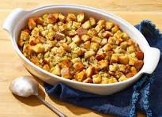

Homemade Bread Stuffing Recipe

This perfectly seasoned homemade bread stuffing will be an easy-to-make and super flavorful
addition to your holiday table! I would recommend making this stuffing for your turkey or even if you just want to
serve it in a bowl either way its going to be delicious!
Thanksgiving is around the corner and it would be perfect to add to your table to enjoy with your family! Just follow
the easy steps below so you can make it quick and easy!
Ingredients
These will be the ingredients you'll need to make this homemade bread stuffing recipe:
- Butter: This bread stuffing recipe starts with two sticks of butter.
- Vegetables: You'll need to cut some celery with leaves and cut some onions too.
- Bread: Nine cups of chopped bread cubes should make about 16 servings.
- Seasonings: Season the bread stuffing with salt, dried sage, dried thyme, poultry seasoning, and black pepper.
More Detailed Ingredients
- 1 cup butter
- 1 1/2 cups chopped celery with leaves
- 3/4 cup chopped onion
- 9 cups soft bread cubes
- 2 teaspoons salt
- 1 teaspoon dried sage leaves
- 1 teaspoon dried thyme leaves
- 1 teaspoon poultry seasoning, or to taste
- 1/2 teaspoon ground black pepper
Steps
You'll find the full, step-by-step below!
- Gather all ingredients.
- Preheat the oven to 350 degrees F (175 degrees C)
- Melt butter in a large skillet over medium-high heat. Cook celery and onion in butter until softened, 5 to 10 minutes.
- place bread cubes in a large bowl. Season with salt, sage, thyme, poultry seasoning, and black pepper.
- Add cooked onion-celery mixture to bread cubes;stir.
- Pour bread mixture into large casserole dish; cover dish with aluminum foil.
- Bake in the preheated oven unti; heated through and golden on top, about 1 hour.
Home